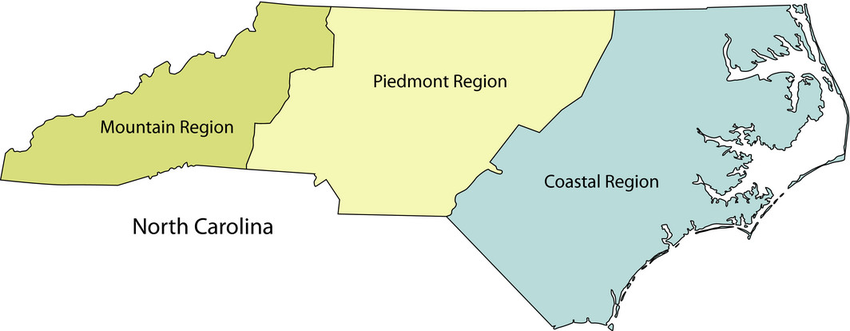

The Geographical Regions of NC
North Carolina has 3 major land regions: the Mountains, Piedmont, and Coastal Plains. Learn about each one by clicking on the map below!

Mountain: Western North Carolina's majestic landscape features the Appalachian Mountains, possibly the oldest mountain range in the United States. The Eastern Continental Divide runs along the top of the Appalachians, separating the rivers flowing east from those flowing west. Rivers that fall on the eastern side of the divide flow toward the Atlantic Ocean while those on the western side of the divide flow toward the Tennessee and Ohio rivers and into the Gulf of Mexico.
Piedmont: Piedmont is a French word meaning "foot of the mountain," and North Carolina's Piedmont region is sometimes referred to as "the foothills." The rolling hills of this region range in elevation from just 300 feet in the east to 1,500 feet near the mountains. The Piedmont is sometimes referred to as a plateau because it is high and mostly flat.
Coastal Plains: The low, flat land of North Carolina's eastern region stretches from the sandy farmland of the Inner Coastal Plain to the state's Outer Banks, a string of barrier islands separated from the mainland by sounds or inlets. The Outer Banks has three capes -- Cape Hatteras, Cape Lookout, and Cape Fear.